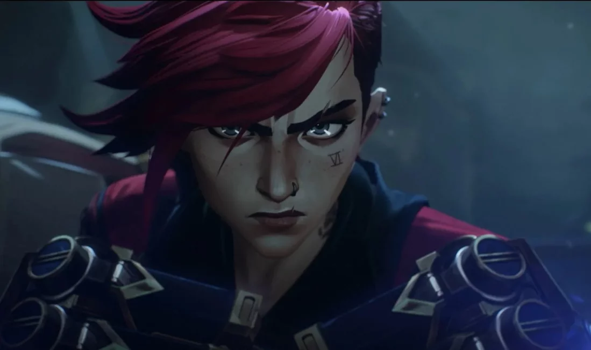

«Аркейн» став першим стрімінговим анімаційним серіалом, який отримав премію «Еммі»
Він обійшов «Ріка і Морті», «Сімпсонів» и «Закусочну Боба».
Цими днями в США відбувається 74 премії Primetime Creative Arts Emmy Awards. Вже відомі перші переможці.
Серед інших нагороду отримав мультсеріал "Аркейн". Епізод When These Walls Come Tumbling Down виграв у номінації «Краща анімаційна програма», обійшовши епізоди «Сімпсонів», «Ріка та Морті», «Закусочна Боба» та «Що, якщо…?»
Це перший випадок, коли стрімінговий серіал отримує премію у цій категорії. Раніше на «Кращу анімаційну програму» номінували «Великий рот» та «Коня БоДжека».
Один із авторів «Аркейн» Крістіан Лінке, отримуючи нагороду, сказав: «Це дуже важливо для нас, оскільки ми прийшли з відеоігор. Приємно бачити, як світ приймає наших персонажів та наші історії. Дякуємо сервісу Netflix, який повірив у нас із самого початку, дякую Riot Games, які працювали над всією IP… і всім людям, які були з грою League of Legends останні 12 років і які допомогли зробити її настільки масштабною».
"Аркейн" вийшов на Netflix у листопаді 2021 року і швидко став хітом. На Rotten Tomatoes у мультсеріалу 100% позитивних відгуків від критиків і 96% від глядачів. На порталі IMDb середня оцінка складає 9,0 балів на основі майже 200 тисяч відгуків.
Серіал продовжили на другий сезон через день після релізу трьох фінальних епізодів.